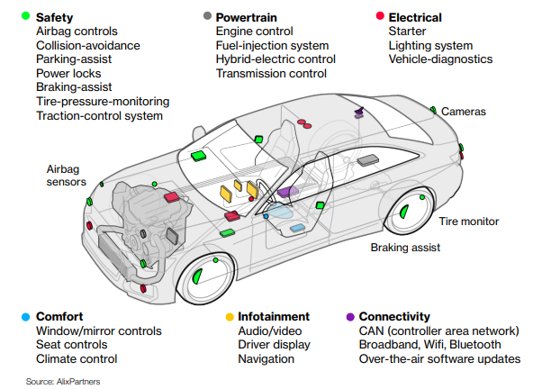
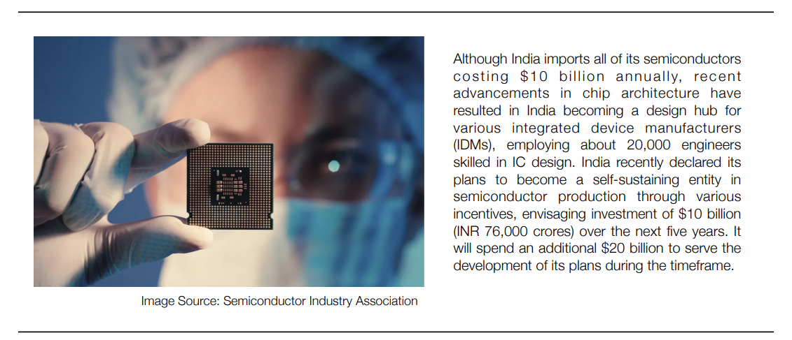

The Semiconductor Industry: Market Structure
The semiconductor industry is highly competitive, innovation-driven, and continuously growing but is subject to rapid changes and volatility. Also, the semiconductor industry is recognised as a critical driver and constantly adds value to the electronics sector. The structure is based on the foundry model, mainly consisting of semiconductor fabrication plants (foundries) where devices such as integrated circuits are made. The competitive environment requires technological upgrades, significant capital requirements, and investment in research and development for scalability.
Semiconductor Companies Market Share Worldwide, as of Dec 2021
Samsung took the market leader position within the global semiconductor industry in 2021, with a market share of 13 per cent. Intel ranked second among vendors, occupying a market share of 12.5 per cent. Among the biggest semiconductor companies, a large proportion is based in the US, with other dominant positions occupied by companies from the Asia-Pacific region, including Taiwan, South Korea, Japan and China.
Applications
Components developed by the semiconductor industry are used in various products, viz. smartphones, PCs, IoT devices, and data centres. Besides that, the demand for automotive semiconductors is projected to grow, with cars getting more intelligent and more connected as days pass by.
How do semiconductors drive the growth of EVs?
We've seen a long, growing checklist that reflects the users’ preferences and concerns. However, to make this a reality, the pace of innovation in the automotive industry should accelerate. For the automotive industry, this is only possible by sharing relevant data and frequently collaborating with the semiconductor industry. The average car is packed with 1,400 semiconductors that control everything from airbags to the engine. Modern vehicles simply cannot run without chips.
EVs use high voltage batteries, which require accurate cell monitoring to ensure smooth performance during long rides. Although the daily commute is less than 50 km for most users, having battery monitors and balancers enables accurate tracking to provide more efficient battery use, leading to longer runtime and reduced battery size and cost.
It is essential to improve a vehicle’s stability and limit the traction between tires and the road in various conditions. This is achieved by using a proper electronic stability program and traction inverter system, which allows the driver to maintain ideal motor torque while improving overall efficiency.
Advanced driver assistance systems (ADAS): Automakers create a safer, collision-free future by integrating automation into the vehicle's core. Using highly accurate radar SoCs, powerful processors, high-resolution cameras, and power management products enables automakers to build high-performance ADAS.
Almost all new vehicles feature wireless devices to offer seamless connectivity across devices and premium audio systems to provide the best sound and user experience.
Functional safety standards have improved the driving experience with advanced safety features, reliability and better performance. Active safety is critical in every system. The semiconductor industry effectively creates a safer driving experience using a wide range of integrated systems.
Faster Charging: As EVs move towards faster, high-voltage charging technologies, they need sophisticated power topologies with other microcontrollers to enable quick and efficient charging. Moreover, wireless battery management systems remove the need for bulky wiring while improving driving range, performance and overall maintenance.
The Global Semiconductor Shortage
The ongoing semiconductor shortage damaged the global automotive industry, costing about $200 billion in revenue and an estimated production loss of 7.7 million vehicles. The imbalance in the supply chain was mainly caused due to the following reasons:
COVID-19: Working from home during the pandemic led to a steep increase in the demand for electronics. Home networking gear, webcams, and monitors were set up at home for a work office environment. Chips used in the automobile industry needed less computing power, giving the manufacturers an incentive to build more sophisticated and expensive chips, shifting their attention away from legacy chips used in automobiles. Simultaneously, the pandemic instigated demand for private transport vehicles, driving people away from public modes of transport - creating a supply-demand imbalance in the industry.
Automobiles Sales Hike: Automakers who cut back drastically early in the pandemic underestimated how quickly car sales would rebound once the lockdown was lifted. There was a sudden increase in the demand for semiconductor chips by the automobile companies to meet the car sales demand. However, semiconductor manufacturers could not meet the needs because their attention was diverted, and they had already started supplying the electronics sector with faster chips.
Stockpiling: PC makers had warned about semiconductor shortage by 2020. Huawei, a Chinese smartphone maker that also dominates the global market for 5G networking gear, began hoarding chips to ensure it could survive US sanctions that were set to cut it off from its primary suppliers (China-US trade war). Soon, other companies followed suit, leading to an increase in China's chip import from $330 billion in 2019 to $380 billion in 2020.
Adverse Weather: A severe winter storm in February 2021 forced the closure of two plants in Austin, Texas, owned by NXP Semiconductors and Samsung, causing a month-long delay in production. Also, TSMC experienced a shortage of ultra-pure water required for cleaning the machinery due to severe drought in the country.
The US-China Trade War: The ongoing economic conflict between the world’s largest economies further fueled the semiconductor shortage.
Occupational Disasters: On October 2020, a fire broke into an Asahi Kasei semiconductor plant in Miyazaki, Japan (specialising in ADC and DAC components). Another Japanese factory owned by Renesas Electronics caught fire in March 2021; the company is responsible for 30 per cent of the total global market for microcontrollers for cars.
The US-China Trade War
The ever-rising bilateral US trade deficit in goods with China and its inflexible exchange rates have been subject to criticism of the US government on multiple occasions. Alarmed by China’s large-scale economic policies, the Obama administration accused China of unfair trade practices, including exporting goods at dumping prices and subsidising aluminium and steel production, initiating a series of anti-dumping investigations against China. On top of that, the US government imposed tariffs on Chinese textiles to shield domestic producers. The trade relationship between the two countries weakened further when former US President Donald Trump formally launched his trade war against China in 2018.
Economists don’t disregard the chances of an economic decoupling with rising tensions between the two nations, resulting in China losing access to American technology, capital, and markets. The United States and its allies are taking the necessary steps to align their motives and reduce reliance on Chinese goods.
For China, the costs of achieving self-sufficiency would be unsustainably high. A quarter of China’s food imports come from the US, and its efforts to reduce dependence has seemingly failed as the cost of replacing these items with domestic supplies will be prohibitively expensive. Moreover, China has dramatically underestimated the challenge of establishing a sanctions-proof chipmaking industry. The foundation of global technology supply chains is specialisation, and no single country or company can dominate or monopolise the entire supply chain. Due to multiple process mechanisms and requiring over 300 different inputs when making chips, even the US, the industry leader, cannot build a fully indigenous semiconductor supply chain. While China reportedly plans to spend $1.4 trillion over the next five years pursuing that goal, it is less likely to achieve fruition.
The Indo-Pacific region spans two oceans and several continents, making it important to U.S. maritime interests. This year, 42 per cent of the world’s exports and 38 per cent of global imports are expected to pass through, according to a recent UN report. With the formation of the Quadrilateral Security Dialogue (QUAD) consisting of the United States, India, Japan and Australia, strengthening its economic and security ties in the region, China is left with limited options to address its financial vulnerabilities.
Response to the Semiconductor Shortage
The automobile industry has been hit the hardest due to the semiconductor shortage, and the supply-demand imbalance is still rising. Carmakers may have to take a step back from semiconductor-intensive solutions in the short run and make sacrifices in efficiency and sustainability to manufacture cars and meet the industry’s demands.
The leading car makers have been deploying several strategies to tackle the shortage:
BMW and Volkswagen have joined Tesla in protecting their car sales from the shortage by reconfiguring the supply chain by teaming up with semiconductor manufacturers to develop custom microcontrollers that can perform multiple functions. Some companies are building prototypes of EV cars without semiconductor-dependent features to launch vehicles quickly and meet the market demand.
Toyota has been stockpiling chips for years to avoid a similar situation.
Leading semiconductor companies like TSMC and Samsung have been building production facilities to ramp up production and tackle the imbalance. TSMC has announced an additional $100 billion investment plan over the next three years to increase capacity, while Intel has announced a $20 billion investment in Arizona for manufacturing two new fabrication plants. Samsung has committed $151 billion to expanding its advanced chip manufacturing and is expected to expand in the United States with a new $17 billion chip plant.
India’s Response and Impact
Despite being able to create a cost-effective ecosystem, the Indian government currently lacks the speed of decisions it should make to compete in a competitive global market. Multiple companies have reported experiencing delays of several months for getting approval and NOCs to set up their plants in India.
The government has approved an INR 76,000 crore incentive scheme to promote semiconductor manufacturing and demonstration. Experts say this will be a strategic benefit for India, especially when facing a semiconductor shortage.
This initiative will accelerate the development of a complete semiconductor ecosystem in design, manufacturing, packaging and testing.
More about the PLI scheme announced by GoI
The scheme designed to incentivise the sector is as follows:
-Foundries or semiconductor fabrication units will be offered
financial support of up to 30% to 50% of project cost based on node
size being manufactured. Display fab units will be supported for up
to 50% of project cost with a limit of 12,000 crores.
-Sensors, compound units and ATMP/OSAT facilities will be offered
financial support of up to 30% of capital expenditure to approved
units.
-Fabless entities will receive a design-linked incentive of up to
50% of eligible expenditure (maximum INR 15 crores per application)
and a product deployment-linked incentive of 4-6% on net sales for
five years (up to INR 30 crores per application).
-The government also offers a clear twenty-year roadmap to
generating highly skilled employment opportunities. It also
established an "Indian Semiconductor Mission" to assess long term
opportunities prevailing within the sector.
It is worthy to note that the government has taken a double-edged approach to generate new sources of revenue through semiconductor production whilst consolidating its position as a paramount entity in chip design by offering design-linked incentives to promote research and development.
Increasing domestic semiconductor production has a tremendous strategic advantage given that labour costs are low and production capacity is ample. This will help domestic companies reduce their dependence on semiconductor imports and help generate income through overseas exports and become more competitive in the global market. Currently, Tata Group, Intel, Foxconn from Taiwan, and other manufacturers have expressed interest in setting up manufacturing plants in India.
Identifying the Value Drivers and Taking Action
Labour & Process: Automakers and top-tier suppliers should gather and analyse more sophisticated data about the semiconductor value chain and where chips could be manufactured. Better decisions are made when business leaders can redefine the competitive landscape by weighing the technological applications for prioritisation at the level of the individual chips required.
Services, Resources, and Asset Utilisation: Using predictive maintenance and remote maintenance mechanisms can reduce maintenance costs. Flexible routing and predictive maintenance technologies will help minimise machine downtimes by as large as 50%. Intelligent IoTs can improve productivity rates considerably.
Supply-Demand Match: Data-driven demand prediction, open innovation, and optimisation algorithms will reduce inventory costs and ensure adequate supply to match demand. Manufacturers have complained of a lack of transparency regarding actual demand levels as automakers are ordering processors and other devices in excess. In the long term, the industry should rethink how supply contracts be structured.
A consistent, balanced risk-sharing plan across the value chain can also help drive growth. All the stakeholders must align their business goals to ensure a better supply-demand match.